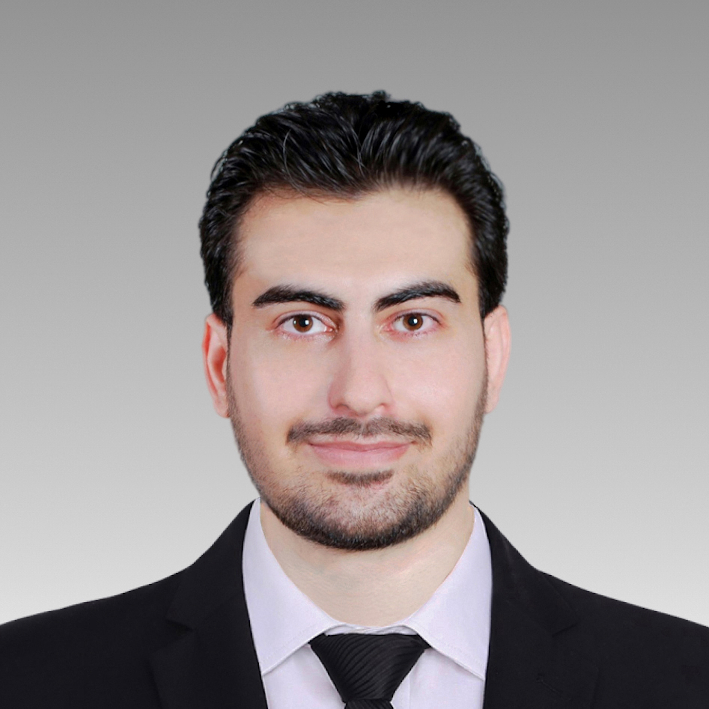

06 · Selected Work
Ph.D. Researcher · University of Illinois Chicago
Ph.D. student in Electrical and Computer Engineering at UIC, specializing in AI-driven Electronic Design Automation for VLSI circuits. Advancing global routing frameworks with GANs and graph neural networks.

I am a Ph.D. student in Electrical and Computer Engineering at the University of Illinois Chicago (UIC), currently working at the HiPerCAS Lab under the supervision of Dr. Inna Partin-Vaisband. My research lies at the intersection of AI and Electronic Design Automation (EDA) for VLSI circuits.
My flagship projects — GANGR (GAN-Assisted Global Routing Parallelization) and PARGR (Scalable Hardware-Aware Partitioning for Global Routing) — address critical scalability and memory bottlenecks in state-of-the-art IC design tools, achieving up to 40% runtime improvement and 74% VRAM reduction on large-scale benchmarks.
I also designed Inception-YOLO, an object detection model that reduces computational cost by 30–60% while preserving accuracy, and have extensive experience with LDPC channel coding, digital hardware design, and intelligent prediction systems.